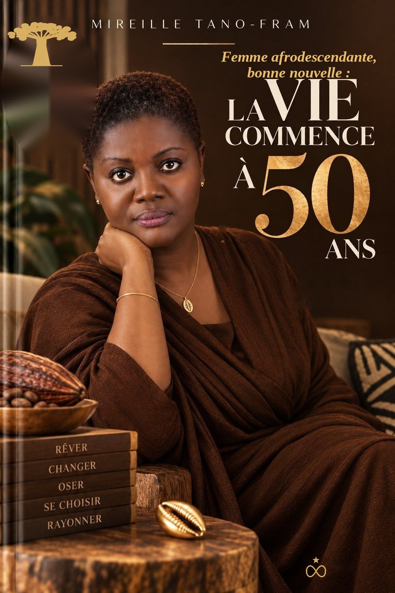
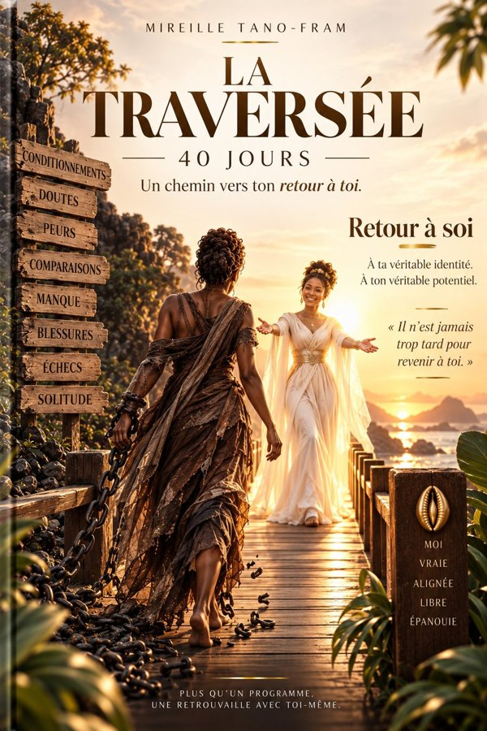

J'ai 53 ans.
Et ma vie commence maintenant.
Avant, c'était de l'entraînement. Qui t'a dit que ta vie était finie ?
Bientôt disponible

Femme africaine, femme afrodescendante, où que tu vives dans le monde.
Toi pour qui le regard de la famille, le mariage, la maternité, la réussite sociale et l'âge pèsent d'un poids particulier.
Être une bonne fille. Une bonne épouse. Une bonne mère. Réussir pour rendre la famille fière. Supporter. Pardonner. Rester forte, même quand ça t'épuise. Faire passer les autres avant toi, encore et encore.
Et derrière cette femme qu'on félicite pour sa force : une femme qui n'a peut-être jamais réellement appris à choisir sa propre vie.
Et soudain, on ne peut plus faire semblant.
Est-ce que c'est vraiment ça, ma vie ? On voit les femmes de son âge. Certaines semblent avoir réussi leur vie. Et on fait les comptes. Le résultat fait parfois peur.
Des paroles humiliantes. La comparaison avec les autres. Le sentiment de ne jamais être assez. La culpabilité. L'obligation d'être forte. La peur de décevoir, d'être seule, d'être jugée, de recommencer.
- Tu as passé beaucoup de temps à être forte pour tout le monde.
- Tu as beaucoup donné.
- Tu as parfois l'impression d'avoir mis ta propre vie en attente.
- Tu sais que tu as encore énormément à créer.
- Tu refuses de considérer ton âge comme une limite.
- Tu sens que tu n'es pas encore devenue tout ce que tu pourrais être.
Un livre pour regarder ta vie autrement.
Ce livre n'est pas le récit d'une femme qui prétend avoir tout compris. C'est le récit d'une femme qui a commencé à regarder sa vie autrement. J'y parle de ce qui m'a longtemps gouvernée : le regard des autres, l'argent, la maternité, la peur, la foi, l'entrepreneuriat, les blessures et la difficulté à agir lorsque l'on ne maîtrise pas encore le résultat.
Et progressivement, une autre question apparaît : qui suis-je lorsque je cesse de me définir par mes circonstances ?
Ce n'est pas un livre qui va te dire comment devenir une autre femme. C'est un livre qui t'aide à regarder celle que tu es devenue après cinquante années de vie, et à décider ce que tu veux faire de la suite.
Passer de « qu'est-ce qu'il me reste ? » à « qu'est-ce que je peux encore créer ? »
Tu n'as pas à croire que tout se règle en quelques pages. Au fil de la lecture, tu pourrais :
- regarder ton histoire autrement, sans nier ce que tu as vécu ;
- regarder ton âge autrement, et ne plus y voir le moment des adieux à tes rêves ;
- reconnaître tout ce que tu as porté : les attentes de la famille, le regard des autres, le besoin d'être validée ;
- comprendre pourquoi certaines peurs continuent de décider à ta place ;
- retrouver des projets que tu avais rangés dans un coin de ta tête en te disant « un jour… » ;
- te demander : qu'est-ce que moi, maintenant, j'ai envie de vivre ?
Ce livre ne te promet pas une nouvelle vie en quelques pages. Il veut te rappeler que tu as encore une vie à vivre, et que tu as le droit de décider de ce qu'elle sera.
Huit mouvements.
“On peut passer tellement de temps à devenir la femme qu'on nous a dit d'être qu'on finit par oublier celle qu'on était avant tout ça.”
“Je ne peux pas avoir tout ce talent-là et être assise là.”
“Ma première décision n'a pas été de devenir riche. Ma première décision a été de revenir à qui je suis.”
“Je suis, foncièrement, libre. Je l'ai toujours été.”
“Je veux avoir le droit de me tromper.”
“Je n'ai pas à tout comprendre. Je n'ai pas à tout croire d'un bloc. Il suffit de poser le premier pas.”
“Je vois les schémas, maintenant. Et voir, c'est déjà commencer à ne plus être seulement traversée par eux.”
“L'eau ne demande pas au rocher la permission de passer.”
« Avec quoi ? »
Recevez par e-mail les 4 premières pages du livre, l’ouverture « Avec quoi ? » en entier, ainsi que les premières pages de La Traversée. Vous les lisez en ligne, sur votre téléphone ou votre ordinateur, avant de décider de poursuivre.
Le livre ouvre une porte. La Traversée donne le temps de la franchir.
Lire peut provoquer une prise de conscience. Mais certaines prises de conscience demandent ensuite à être vécues. C'est le rôle de La Traversée : 40 jours pour revenir à soi.
La Traversée n'est pas un programme à réussir. C'est un espace pour ralentir, regarder, comprendre et choisir autrement. Chaque journée t'invite à travailler une dimension de ton rapport à toi-même : réflexion, méditation, questions, pratiques personnelles, gratitude.
« Tu ne fais pas ces jours pour devenir quelqu'un d'autre. Tu les fais pour retrouver celle que tu es. »
Découvrir La Traversée
Le livre, puis la Traversée.
La vie commence à 50 ans
Une histoire à lire, pour prendre du recul, comprendre et voir autrement son histoire.
9 900 FCFAObtenir le livreBientôt disponible
La Traversée
Un chemin à traverser, pour ralentir, pratiquer et commencer à marcher autrement.
19 900 FCFAObtenir La TraverséeBientôt disponible
Livre + La Traversée
Le livre pose les questions. La Traversée te fait vivre les réponses.
24 900 FCFAObtenir l’expérience complèteBientôt disponible
- La vie commence à 50 ans, livre numérique, à lire en ligne dans votre liseuse personnelle.
- La Traversée, 40 jours pour revenir à soi, avec le parcours complet ou avec l'expérience complète.
- Un accès immédiat après ton achat, sans limite de durée.
Le livre se lit en ligne, sur ordinateur, tablette ou téléphone. Tu tournes les pages comme dans un livre et tu peux agrandir les caractères. Ton accès est personnel et s’ouvre sur 3 appareils au maximum.
La Traversée existe aussi sous forme de coffrets : la Box Essentiel (39 900 FCFA), la Box Premium (55 000 FCFA) et la Box Signature (75 000 FCFA), avec un bloc-notes, un stylo, un mug, un T-shirt et d'autres objets pour accompagner tes 40 jours. Elles ne sont pas encore commercialisées : la précommande ouvrira prochainement. Voir les trois box
Le livre et le programme La Traversée peuvent aussi être commandés en version papier. Le prix est plus élevé que celui de la version numérique, car il comprend l’impression. Les frais de transport s’ajoutent au prix et sont à la charge de l’acheteur. Pour toute demande, écrivez-nous : nous vous répondons avec le prix et le délai.
Pas comme une femme qui prétend avoir tout compris.
Moi aussi, j'ai fait le bilan. J'ai connu des réussites et des échecs. J'ai travaillé. J'ai entrepris. J'ai été mère. J'ai traversé des périodes difficiles. J'ai connu le doute, et les moments où je me suis demandé ce que j'allais faire de ma vie.
Et pourtant, autour de mes 50 ans, quelque chose s'est passé. J'ai compris que je ne pouvais plus continuer à regarder ma vie à travers ce qui me manquait.
« Je ne peux pas avoir tout ce talent-là et être assise là. »
C'est là qu'a commencé la nouvelle histoire. J'ai 53 ans aujourd'hui, et je suis loin de considérer que mon histoire est terminée.
Qu'est-ce qui doit être différent ?
Pas une promesse de nouvelle vie magique. Mais une femme qui ne regarde plus son âge de la même manière. Une femme qui sait davantage ce qu'elle veut. Une femme qui comprend mieux ce qui l'a retenue. Une femme qui cesse progressivement de demander aux autres la permission d'exister pleinement. Une femme qui recommence à envisager des possibilités là où elle ne voyait que des limites.
Je ne suis pas en retard. Je suis encore là. Et maintenant, je choisis la suite.
Ce que tu veux peut-être savoir.
Est-ce uniquement pour les femmes de 50 ans ?
Non. Le titre parle de 50 ans, mais le sujet est plus large : le moment où l'on décide de reprendre sa vie en main et de revenir à soi.
Est-ce un programme thérapeutique ?
Non. Il s'agit d'une expérience personnelle et réflexive, pas d'un dispositif médical ou thérapeutique.
Dois-je commencer par le livre ?
Oui. Le livre est le point d'entrée. La Traversée complète, 40 jours pour revenir à soi, vient ensuite, quand tu es prête à aller plus loin.
Dois-je faire les 40 jours consécutivement ?
Le programme est conçu autour de 40 jours, mais l'objectif n'est pas la performance. Il s'agit d'un chemin que l'on peut reprendre.
Est-ce adapté au téléphone ?
Oui. Le livre et La Traversée sont pensés pour une lecture confortable sur mobile.
Qui t'a dit que ta vie était finie ?
Qui t'a dit que tu devais te contenter de ce qui reste ? Qui t'a dit que tu ne pouvais plus aimer, plus créer, plus entreprendre ? Personne ne me l'a dit. Et même si quelqu'un me l'avait dit, je ne le croirais pas.
Tu n'as pas besoin d'avoir toutes les réponses. Tu peux simplement commencer.
La vie commence à 50 ans. Avant, c'était de l'entraînement.
Merci d'avoir ouvert cette porte.
Que ces pages te donnent au moins une chose : l'envie de revenir à ce qui est véritablement à toi.